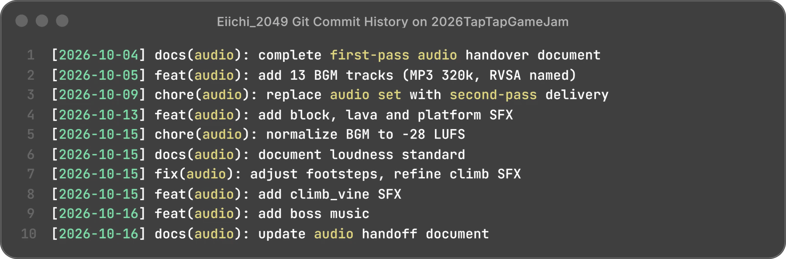

环境层
水体流动、房间底噪、机器与植物细节。用循环底噪先建立空间与材质，再让交互音效浮在上面，而不是把环境做成一条持续的大混响。
Ambience Loop2026 TapTap 聚光灯 GameJam · 21 天团队作品 · 音乐 / 音效设计 / Unity 音频实现
《形之彩》是 2026 TapTap 聚光灯 GameJam 的 21 天团队作品：以颜色与水为核心的像素平台解谜。声音在这里不只是气氛，它要同时回答三个问题——机制现在是什么状态、玩家的操作有没有被接住、这一段关卡要把情绪推到哪。
我负责音乐与音效设计，并完成音频在 Unity 里的接入。项目没有使用 Wwise / FMOD，而是基于 AudioCatalog + AudioCuePlayer + AudioManager 搭了一套轻量的 Cue 系统：所有声音先登记成 Cue，再按 Music / SoundEffect 两个通道播放。
水体流动、房间底噪、机器与植物细节。用循环底噪先建立空间与材质，再让交互音效浮在上面，而不是把环境做成一条持续的大混响。
Ambience Loop脚步（干/湿）、入水/出水、跳跃、方块拾取与放置、检查点、Boss 提示。短促、清晰、可分辨；音量与通道让它在音乐之上仍然读得出来。
SFX Cue · OneShot关卡内 BGM 在 7 首氛围曲之间轮换，Boss 战单独进入 Boss 曲。统一到 −28 LUFS 后再交付，保证循环衔接与战斗切换不会忽大忽小。
Music Channel · Loop项目明确不做 3D 空间音，所以没有堆 RTPC、距离衰减或跟随声源；空间感由环境循环与音量分层承担，机关循环声按 owner 停止。这个约束反而让 Cue 结构更清楚。
另外补了两个容易被忽略的细节：UI 确认音在同一帧内去重，避免一个按钮被按钮本身和流程路由各播一次；总音量、音乐、音效三条滑杆的数值写入 PlayerPrefs，重开游戏后仍然保留。
sfx_gp_* 前缀。
项目按期上线 TapTap 聚光灯专题页，可试玩（带声音）。音频侧交付 13 首 BGM 与成套 SFX，BGM 全部归一到 −28 LUFS，并留下命名规范与两版交接文档。
省时间的地方在交接：命名与分支纪律让音频改动不碰场景接线，程序按 cue 名就能查到触发时机。复盘时估算，一次对接比原先少花约 2 小时——这是估算，不是统计口径；能被核对的只有提交记录本身。
也要说清前提：这套 Cue 系统是项目内现搭的，没有中间件可用。它保住了 21 天的下限，但不等于一套可复用的中间件方案。
一、没有专属主题曲。同期还在并行一个商业项目，我用库存曲目复用守住进度，代价是游戏缺一个能被记住的动机。下次把「主题曲动机」当 P0 锁死：哪怕先交 30 秒吉他单音 Demo，也要先立住音乐的魂。
二、复古类 Foley 的库不够厚。爬藤蔓一类的声音只能现场录、现场调，吃掉了本该留给混音的时间。
这件事我后来想得更细：找不到合适素材，可能来自三个不同的地方——储备不足（没这个材质）、检索低效（有，但命名与试听太慢）、方案单一（没考虑分层合成、变调或替代材质）。我当时的默认反应是「再去找素材」，恰好是最短视的一条；正确的顺序是先把三者分开归因，再决定补库、改命名，还是改设计流程。
三、需求对齐用妥协换了进度。策划的需求表偏模糊时，我选择不抬杠：团队是和气的，但部分音效因此缺少明确的验收标准。下次不争，改为给选择题——A 是通用音效、今天就能上；B 是定制音效、需要你们周四前填完这张表。
没有冲突，不等于验收标准足够。这条记进流程，而不是记在手感上。